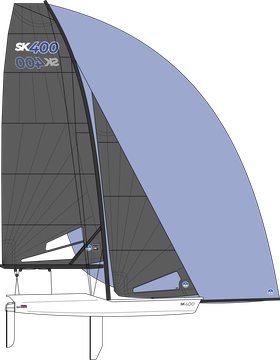
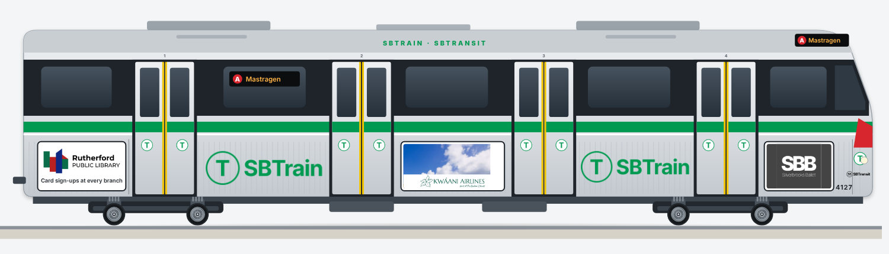
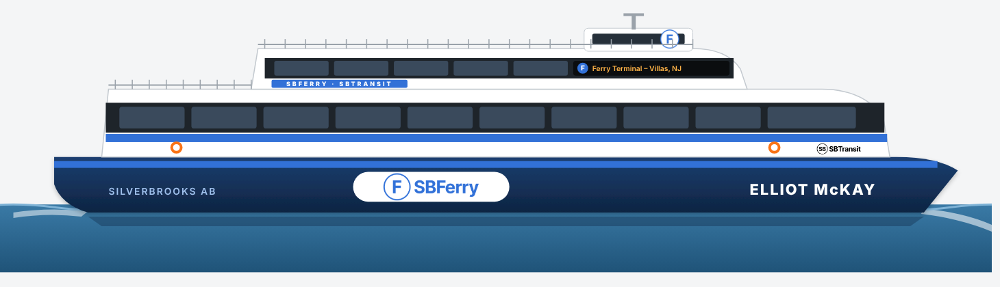

Silverbrooks. Stay windward.
A harbor city of a million people, 380 years old, where the whole town stops for coffee at 3.
Top 10 things to do 48 hours in SBSee Silverbrooks
On the water, on the boardwalk and around town.


Top 10 things to do
Neighborhoods
Downtown
The Capitol, Elliot Square, AmEx Garden and BECU Stadium.
East Harbor
East Harbor Center, jetBlue Park and the waterfront promenade.
Pearl's End
Oysters, boats and the Maritime Museum. The oldest waterfront in the city.
Saint-Bruno
The French quarter. Bakeries, cafés and École-de-Annaïck.
Saint-Paris
Cathédrale Saint-Paris and quiet old streets.
Lindgren Heights
Lindgren Commons and the medical district on Lindgren Ave.
Château-du-Pierre
SBMA and grand old houses.
Old Mill
Mills on the Wellington River, now lofts and breweries.
Food
Dock roll
Fried fish on a split roll with pickled onion and dill sauce. The city's sandwich. Never with ketchup.
Harbor chowder
Clear-broth chowder with clams and potatoes, served on the waterfront from October on.
Saint-Bruno bun
Cardamom-and-butter bun from the French quarter's bakeries. Eat it with black coffee.
Lindgren pie
The neighborhood pie. Every family argues about whose is right.
3 PM coffee
Not a food, a rule. The whole city stops for coffee at 3. Join in.
Where to go
Foundry Hall
214 Foundry Row, East Harbor Center
Lishian Market Hall
539 North Jefferson Ter
Lantern Night Market
Fridays, 40 Lantern Walk
Sports
| Team | Sport | Venue |
|---|---|---|
| SB Voyageurs | Hockey | AmEx Garden |
| SB Gales | Basketball | AmEx Garden |
| SB Dockers | Baseball | jetBlue Park, on the harbor |
| SB Admirals | Football | BECU Stadium |
| Étoile SB | Soccer | BECU Stadium |
The Silverbrooks year
| April | First Water Boats go back in the harbor. Horns, bells and the first sail of the season. |
| June | Midsommar Maypoles and flower crowns at New Sweden Heritage Hall. |
| July 14 | Bastille Day Saint-Bruno closes its streets for a block party. |
| Summer | Harbor Week Regattas on Regatta Green's big screen, tall ships, fireworks. |
| Fall | Oyster Opening Pearl's End opens the oyster season with a parade of boats. |
| November | Mill Night Old Mill lights up the river with handmade lanterns. |
| December | Lantern Night Lantern Garden glows for a month. |
| Dec 13 | Lucia Candlelit processions across the city. |
| Dec 31 | Horns at Midnight Every ferry in the harbor blows three horns at midnight. |
48 hours in Silverbrooks
| Day 1 · Morning | Saint-Bruno bun on Promenade Saint-Bruno, then SBTrain downtown to Elliot Square and the Capitol. |
| Day 1 · Afternoon | East Harbor Center: The Mainsail sky deck, New Sweden Heritage Hall, lunch at Foundry Hall. Stop for 3 PM coffee. |
| Day 1 · Night | Alexandria Hall for the ballet, or a Voyageurs game at AmEx Garden. |
| Day 2 · Morning | SBFerry across the harbor. Maritime Museum in Pearl's End. |
| Day 2 · Afternoon | Dock roll on the pier, then SBMA in Château-du-Pierre. |
| Day 2 · Night | Lantern Night Market on Friday, or harbor chowder by the water. |
A sailor's weekend
| Saturday | Rent a boat or join a community sail. Watch the fleet race from Regatta Green. |
| Sunday | Albanardia Maritime Museum, then the ferry ride around the harbor at sunset. |

Getting around

SBTrain
The subway. One of the first in the country (1897). Letter lines, every few minutes.
SBMetro
Buses and the Center Line streetcar to East Harbor Center (4 minutes from downtown).

SBFerry
The harbor ferries. Also the cheapest harbor tour in town.
From SBX airport
Take the SBX shuttle to the Transit Center, then the D or R Line into the city.
Day trips
Albanardia City
The state's second city and the Albanardia Sound waterfront.
New Brolin
A slower coastal town down the bay.
Cape May, NJ
Ferry across the bay to the Jersey Shore's Victorian beach town.